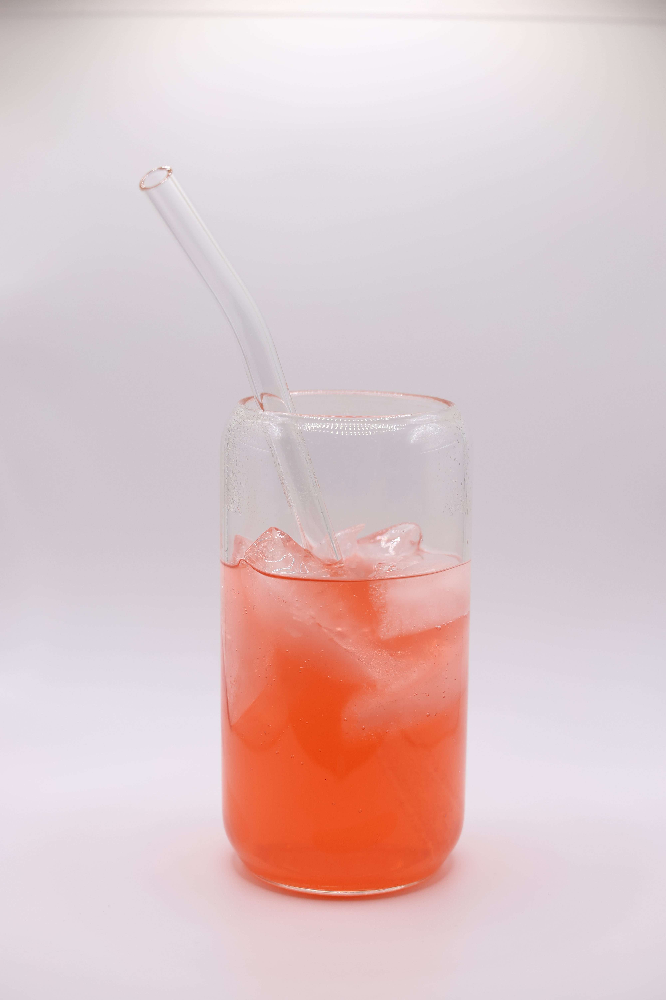

Kinard Photography is a creative studio focused on delivering polished, professional imagery for both product and portrait clients. I combine technical precision with a creative eye to produce visuals that feel consistent, intentional, and true to your brand. Whether you're a small business needing standout product shots or someone looking for a portrait that genuinely reflects who you are, I approach each shoot with care, kindness, and purpose. My process is built around clarity, attention to detail, and a commitment to making every client feel supported.
From lighting setups to post-processing, I treat each image as a crafted piece of visual storytelling. Product photography is especially rewarding - capturing texture, color, and form in a way that elevates your brand. Portraits, meanwhile, are about connection and authenticity. Kinard Photography blends engineering-minded precision with a warm, client-centered approach to create images that leave a lasting impression.

| Service | Description |
|---|---|
| Product Shoot | Clean, consistent visuals for e-commerce or branding |
| Portrait Session | Individual or team portraits with retouching options |
| Branding Bundle | Combined product and portrait shoot for small businesses |
Explore more about photography techniques at DIY Photography or check out gear reviews on DPReview.